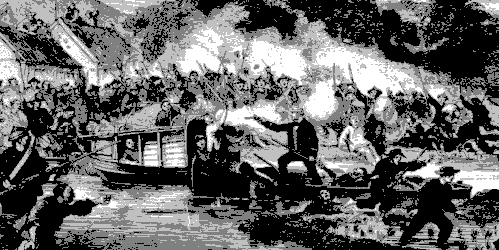

Karl Marx in New York Daily Tribune

Written: 1853-1860, and published in English. This selection was published in 1951 in Marx on China, 1853-1860. Articles from the New York Daily Tribune with an Introduction and Notes by Dona Toor, by Lawrence & Wishart, London;
Scanned: Harold Newson, July 1999;
HTML: Andy Blunden;
The majority of the following were written during the second European-Chinese War. Marx and Engels both contributed to a series of articles for the New York Daily Tribune spanning several years — though the byline was always Marx's. These articles were part of that journalistic flow.
China was, at this time, in upheaval. It was the most populous region in the world (400 million people in 1834). The "Celestial Empire" had long operated with trade surpluses, but by the 1840s, serious trade deficits plagued China. The first European-Chinese conflict (The Opium War) began in 1839 and ended with the 1842 Treaty of Nanking. During this period, famines wracked the land. It is estimated maybe 14 million people died in 1849, and another 20 million between 1854 and 1860.
At the same time, the Taiping rebellion broke out in 1850 and attacked the status quo Confucianist Manchu Dynasty -- which had ruled since 1644. The rebellion was based in social revolutionary ideas of equality and was popular among the masses. It abolished private property, established sexual equality, and banned drugs (from alcohol to opium). By 1853, it dominated much of SE China. It would not be until 1864 that the Taiping capital of Nanking was captured by the imperial Manchu government.
The "Lorcha War" (also sometimes called the Second Opium War) ran from 1856-58. It began over the "mistreatment" of a British flag on a Chinese junk, or a "lorcha." It officially ended with the 1858 Treaty of Tientsin.
In 1860, Beijing was sacked by the Europeans. However, the Europeans generally supported the Manchu Dynasty against the Taiping rebels, preferring to keep the government installed for fear of what chaos the rebels might bring to trade relations. The Manchu dynasty would not fall until 1911 revolution, when the entire dynastic system collapsed with the provisional government of Sun Yat Sen.
1853, Jun 14: Revolution in China and in Europe
1857, Jan 23: The Case of the Lorcha Arrow
1857, Mar 16: Parliamentary Debates on the Chinese Hostilities
1857, Mar 25: Defeat of the Palmerston Ministry
1857, Apr 07: Russia and China
1857, Apr 10: Whose Atrocities?
1857, Jun 02: Some Official Correspondence
1857, Jun 05: Persia-China
1858, Sep 20: Trade or Opium?
1858, Sep 25: Free Trade and Monopoly
1858, Oct 05: Trade and the Treaty
1858, Oct 15: The British and Chinese Treaty
1859, Oct 01: The New Chinese War
1859, October: Another Civilisation War
1859, Oct 18: The New Chinese War
1859, Dec 03: Trade with China
1860, Feb 14: English Politics